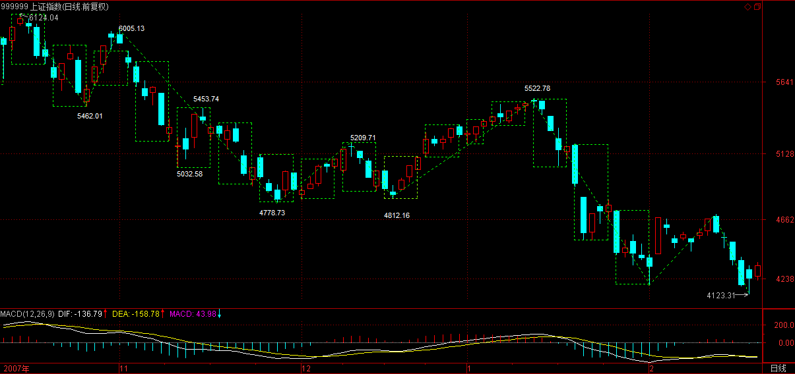
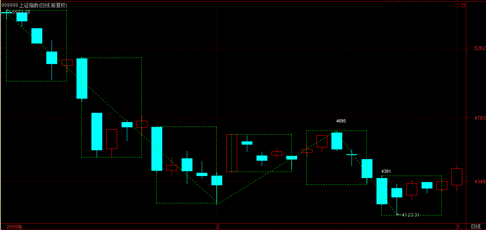

(2008-02-25 16:32:23)
只要是中国人，都知道，诸葛亮曾因为一场雨没把司马懿给灭了，这虽然是小说情节，但还是有分析意义的。【韶山映山红】上方谷之战是诸葛亮生前与司马懿的最后一战，也是诸葛亮北伐过程中诛杀司马懿的最佳时机，同时也是直接联系到后来的五丈原诸葛亮之死的重要情节，在三国故事中占有非常重要的地位。此战，诸葛亮成功利用军粮将司马懿及其大军诱入上方谷内，封锁谷口，用火攻之，眼看大功告成，突然天降大雨，将大火浇灭，司马懿趁机率军冲出谷口，致使诸葛亮功败垂成，长使英雄泪满襟。】
打仗，必须要把尽可能的情况完全分类，用火攻，那当然最怕下雨，诸葛亮草船借箭的时候算天气算得那么准，怎么这次就没好好算？【韶山映山红】说明借东风就是骗人的。】
此外，既然诸葛亮知道这一次不搞死司马懿就没机会了，那怎么不把所有的可能都想到？【韶山映山红】没有做到完全分类。】其实，就算有雨，如果在峡谷外再安排点兵马，那司马懿也逃不掉了。【韶山映山红】说明上方谷之战也是骗人的。】
当然，其实并不是诸葛亮真想不到，而是历史上司马懿就没被诸葛亮干掉，写小说的总不能编得太离谱了，只好把这一切归于天命，【韶山映山红】所谓天命，都是掩人耳目的自欺欺人。】其实，在现实中，所谓的天命，都是在人谋之中，只是你的谋划是否完全，【韶山映山红】还是完全分类。】另外，一个很重要的是，完全的谋划是否超越你的能力。【韶山映山红】是否有能力完全分类。是否做到了完全分类。】
股票比战争要简单得多，因为，对于股票来说，完全的分类或谋划，基本不存在超越能力的问题，【韶山映山红】“基本不存在”，也就是说，还是存在。那么，是什么情况？★以后研究。】只是买卖多少的问题，有能力就多点，没能力就少点，不存在某种分类完全不能执行的情况。【韶山映山红】仓位管理。资金管理。大户，小散，都可以做完全分类。】因此，所有的重点，都在这完全的分类上了。【韶山映山红】真正要做的就是如何分。】
这点，前面已经反复说过。
但完全的分类，不是单层次的，一定也必须是多层次的。【韶山映山红】不是维度，是层次。】
本ID的理论最重要的特点之一，就是自然给出了分类的层次，也就是不同的自然形成的级别。【韶山映山红】级别是自然形成的。】
不同的级别，有不同的完全分类，【韶山映山红】不同的完全分类的状态。】而综合起来，就有了一个立体的完全分类的系统，这才是我们的操作必须依赖的。【韶山映山红】多级别联立。互为因果、互相钳制。】
当然，对于小资金，你可以完全用一个层次的完全分类进行操作，【韶山映山红】同级别分解操作法。】但对于大一点的资金，这是不合适的。例如，30、5、1分钟的三个层次所构成的系统里，任何的当下状态，都对应着不同层次完全分类中的一个现实状态。
例如，现在的上海指数，从6124点下来，是一个30分钟的下跌，现在处在最近一个中枢的中枢震荡之中，只要不出现第三类卖点，这震荡还是有效的。【韶山映山红】“30分钟的下跌”。“现在处在最近一个中枢的中枢震荡之中”。】
而5分钟层次上，是离开第一个中枢向下移动中，由于第三类卖点没有形成，所有是否形成5分钟下跌，不能给出100%的确定。【韶山映山红】“离开第一个中枢向下移动中”，如何划分这个5分钟中枢？不确定。以后研究。★★】

而1分钟层次，一个1分钟下跌已经形成。
因此，这三层次构成的完全分类就给出了最完美的操作指示。
首先，第一个必然且一定是最先出现的变化，就是1分钟层次的底背驰。如果连这都不出现，其他两个层次是不会有任何状态变化的。【韶山映山红】1分钟下跌不出现底背驰，就是下跌延伸，大级别即使有什么，也会被小级别延伸所破坏。】
而这底背驰后，必然出现回拉，这里就面临两个完全分类：一、这回拉构成原来5分钟的第三类卖点；二、回拉不构成原来5分钟的第三类卖点。
因此，对应这两种5分钟层次的状态变化：一、第二个5分钟中枢的确认从而确认5分钟的下跌。二、原来5分钟中枢继续震荡的确认。【韶山映山红】“第二个5分钟中枢”是谁？★以后研究。】
显然，这两种5分钟的新变化，都不会导致30分钟层次有状态变化。但，其中的其一种，却隐含着30分钟即将可能面临变化，因为5分钟下跌一旦结束回拉构成30分钟第三类卖点，那么30分钟层次就会有所变化了。
因此，在当下的状态，我们可以很逻辑很严密地推算出后面下一步的系统层次的状态变化，那么这个变化的可能结果，都对应着你可以承受的范围。因此，你只需要把自己可以承受的能力与之相匹配，给出相应的参与资金比例，相应的仓位控制，就可以自如地参与其中了。
例如，你没法应付可能出现的第三类卖点的情况，那么，你就别参与了，为什么？因为这第三类卖点是一个可能的选项。反之，如果你对所有的可能都有面对的技术，那么，就可以参与这1分钟底背驰的活动了。【韶山映山红】“1分钟底背驰”之后的反弹，如果返回中枢、继续中枢震荡，要有能力做中枢震荡的操作。如果不返回中枢就要退出，要有能力离场。这两样都没有问题，“就可以参与这1分钟底背驰的活动了。”】
所以，最终还是那个问题，把市场分析好了，把情况分类好了，然后问一下自己，你有这个处理所有可能情况的能力吗？如果没有，那就算了；如果有，就上。事情就这么简单。
当然，你还可以这样，就是把仓位弄得特别小地去参与，这样，可能培养自己面对相应情况的能力，能力毕竟要干才能培养的，光说不练，那永远还是没能力。关键是知道自己干什么，而不是糊涂蛋瞎蒙就行。
(2008-02-26 15:14:39)
今天的所谓救市发言，本质上一点技术含量都没有，除了表现管理层最近对市场的超级关注外，没有其他实质内容。关于恶意圈钱，并没有给出实质的限制措施。何谓根据市场的情况？难道一上5000点，平安就可以继续1600亿的圈钱？所以，这个问题不彻底解决，市场最终的上涨空间一定受到限制。【韶山映山红】管理层周末再度放行两只股票型基金和一只债券型基金，被市场解读为“二次救市”之举。】
当然，从超短线的角度，昨天已明确指出1分钟底背驰出现后的机会。今天的走势，简直是超级教科书，下午一开盘的第三类卖点，然后再破底，在2点半形成最后的底背驰，【韶山映山红】按照飞狐历史数据，“下午一开盘的第三类卖点”那个位置的向上线段不成立，应该又是笔是否成立的问题。这里依从缠师的说法，认可线段成立。】

如此教科书的走势，如果都不能看明白并操作，那么唯一的办法就是继续读书。

由于1分钟背驰后，最低的回升幅度就是回到最后一个中枢里，所以，明天的关键就是这升幅能否扩大。【韶山映山红】收盘时没有形成向上的线段，但是点位已经“回到最后一个中枢里”。】
日线上，今天已经有底分型的雏形，明天只要不破底并比今天最高位高，底分型就成立，
后面就是是否延伸为笔的问题，所以，技术上已经初步具备上冲的形态。
但是，目前最大的问题是，政策上需要真正的干货，而不是一些掺水的玩意。如果政策不能给于足够的真正支持，那么，就算上去，也就是继续保持大的震荡而已。
操作上还是那句话，以震荡的思路去操作，一旦上冲没力就先出来。个股上，前面提到的个股都会有所表现的，但现在的问题还是，如果没有真正的政策面支持，持续的行情的展开就有困难，而个股也只能进行线段式的震荡表现。
今天下午晚上都有会，帖子就克扣了，抱歉。
先下，再见。
(2008-02-27 15:19:36)
昨天说了，今天不创新低且冲上4331点就构成底分型，【韶山映山红】4331点是昨天2月26日底分型最低K线的高点。4391点是前天2月25日底分型左元素K线的高点。】今天的走势也很争气地达到了最基本的目标。
但是，站在严格的意义上，这不是最强的走势，因为整个底分型的上边沿在4391点，也就是前天的高点，【韶山映山红】4331点是昨天2月26日底分型最低K线的高点。4391点是前天2月25日底分型左元素K线的高点。】最强的走势就是今天直接攻上这点上。【韶山映山红】底分型右元素高于左元素，所谓强底分。】
因为，底分型成立并不意味着上攻走势必然延伸为笔，关键是要站住整个底分型的上边沿，这才是技术上的关键，前面4818点、4672点之所以不能延伸为笔，就是这个原因，因此，4391点成为短线最关键的位置。
由于大盘选择了我们认为最有可能的第二种中线走势【韶山映山红】“二、绿柱子再出现但比前一次短且面积小，对应着6124点下来的30分钟下跌背驰，也就是最终结束。然后展开一轮30分钟级别的向上过程。”】（第一种还不能完全排除），【韶山映山红】“一、再次绿柱子后比前一次更长，面积更大，这对应着原来从6124点下来的30分钟级别下跌不能形成背驰，那么大盘最终的下跌空间完全可以合理地到达2500点，这也是我们所说以4300点为中轴的1800点震荡区间范围内的。”】

因此MACD的进一步变化就可以勾画出大盘中线的可能变化：
一、由于今天MACD的绿柱子开始收短，因此，最好的情况，就是再次放红并创出比上次更大的红柱子，这样，MACD的黄白线至少要回到0轴附近。
注意，所有真正行情的展开，都必要需要MACD的黄白线回到0轴，一旦站住0轴，行情就会展开。这是最好的走势。
二、绿柱子再次放长或放点红后再放绿柱子。
这种情况对应着继续的底部震荡。
目前，大盘中线的颈线位置在4700点上下，可以给各位一个最明确的技术图象，如果能在MACD黄白线回到0轴同时大盘回到颈线，最后站住，那么突破就不可避免。当然，要完成这技术图象，还需要多方面的配合。而操作上，没必要被这干扰，只要颈线不有效突破，就可以继续按30分钟震荡去操作。
注意，之所以用MACD来描述，主要是这个指标谁都能看见，而且直观，并不是说MACD有什么特殊的地方，如果你对本ID的理论有所把握，这一切都完全没必要的。
本ID前天明确告诉有1分钟底背驰，昨天一个教科书走势，如果都不能把握，那你就面临两种选择：
一、你不需要再来这里了，等你被市场再戏弄N次后再说吧；
二、抓紧学习，这是最基本的技能，连这都不能把握，不学习不继续锻炼哪里有更好的办法？
那么，昨天按理论进入的人，【韶山映山红】1分钟下跌趋势背驰后进入的人。】今天的操作，在100那课程里其实也早说了。因为这后面无非面对两种情况：一、1分钟回升构成5分钟的第三类卖点；二、1分钟回升不构成5分钟的第三类卖点。【韶山映山红】不管上面的5分钟中枢是怎么划分的，可以确定的是，1分钟下跌趋势是离开段，现在的1分钟回升是返回段。】
无论哪种情况，都对应一个1分钟的走势类型，现在唯一需要市场去确认的，是这类型是盘整还是上涨。【韶山映山红】“1分钟回升”的走势类型可能是1分钟盘整，也可能是1分钟上涨。】
今天的走势，在4331点上下形成第一个1分钟的中枢，【韶山映山红】按照现在的飞狐历史数据，这一天的高点和前一日的低点之间只有一个线段，从原文推理看，成三段，所以这里才“形成第一个1分钟的中枢”，下文才有“今天下午开盘后那线段类背驰”。4331点是昨天2月26日底分型最低K线的高点。今天2月28日的1分钟的中枢并没有4331这个点，只是中枢围绕这个关键点震荡。★】
因此，后面的走势，就是这中枢的演化，一旦这中枢能形成第三类买点，那么，构成上涨并重新回到原来5分钟震荡的几率就极大了。
操作上，就很简单，你根本不需要慌忙抛出，因为你可以根据这中枢的演化再做决定。当然，如果你的胆子特小，那最稳健的做法，就是今天下午开盘后那线段类背驰先抛出一半，为什么？因为线段类背驰后必然形成1分钟中枢，这表明你不想全仓参加这1分钟的震荡，等其后走势确认再说。【韶山映山红】按照现在的飞狐历史数据，这一天的高点和前一日的低点之间只有一个线段，从原文推理看，成三段，所以上面才说“形成第一个1分钟的中枢”，这里才有“今天下午开盘后那线段类背驰”。】
当然，对于一般心态好的，其实没必要如此，1分钟的震荡你都受不了，那还怎么搞股票。不过，对于操作水平有一定的，其实也可以利用那线段的类背驰，进行换股操作，这是效率最高的玩法，不过这对水平要求更高，并不是每个人都可以达到的。
本ID的理论给予的操作指示都是最明确、最精确的，没有任何含糊的地方，关键是你的心态和能力，有什么的心态和能力就参与什么活动。但前提是，基本的操作和分析，你必要彻底明白。
个股还是那句话，让板块轮动起来才是王道，否则，大盘的动力将出现大的问题。
先下，再见。
(2008-02-27 16:19:03)
这里说的是马克思意义上的社会主义，而不是那些阿猫阿狗的所谓社会主义。当然，你可以抓着一根鸡毛说，这就是社会主义，但这和马克思无关，这里只探讨马克思意义上的社会主义。
注意，一切非马克思意义上的社会主义，站在马克思的意义上，都是资本主义的变形，而其中最下劣者，还带着封建主义的残余。
首先，在所有所谓的马克思主义或非马克思主义者那里，都有这样一个愚蠢的问题：社会主义难道不是一国一国地实现吗？实现总有先后吧？这类愚蠢的问题只表明一个事实，就是这些人根本对马克思意义上的社会主义一无所知。
马克思意义上的社会主义，只可能是资本全球化高度发展后的产物。资本的高度全球化，必然对应着经济的一体化，而站在马克思经济基础决定上层建筑的最基本逻辑上，经济的一体化必然导致政治的一体化。因此，在资本全球化之下，现在所谓的民族主义国家将逐步走向融合和一体，换言之，当国家还被国家之时，资本全球化就没有达到其最终的限度。
共产主义一个最重要的方面之一，就是国家的消亡。而国家的消亡分两个阶段，一个是国家形式的消亡，一个是国家内容的消亡。社会主义作为共产主义的一个过度阶段，其实现必然和国家形式的消亡同时。也就是说，在现实马克思意义上的社会主义之时，作为形式的国家、特别是国家的分列形式，必然同时被消亡。因此，社会主义的实现，根本不存在是否在一国先实现的问题，因为，国家的分列形式不消亡，就没有社会主义的实现。
这是马克思理论逻辑的必然结论，而在社会主义实现之时，国家的分列形式消亡了，但国家的一些基本内容将在一定时期存在，这就是所谓的无产阶级专政阶段，一旦这个阶段结束后，国家的内容也将消亡，为最终过度到共产主义给出最基本的基础。
资本全球化所达到极限之前，还有很长的路要走，其中最急迫的一个阶段，就是本ID反复强调的12亿5千万级别的阶段，这是资本全球化极限前最后一个分列的阶段，谁成为这个阶段的主导国，将是有着决定性历史意义的。
因此，这也就是为什么本ID在N年前写《货币战争和人民币战略》的最主要目的。这资本全球化的趋势是谁都不可以阻挡的，唯一可以做的，就是让中国成为12亿5千万级别的阶段主导国，这里的意义，如何估量都不为过。
可惜，真正明白的人没有，所有人都被一些小的趋势，小的波动所迷惑。说句狠话，国家分列形式的消亡是必然的，是资本全球化的必然结果，这点谁都不可以被改变，而最终谁消亡谁，就是一个最关键的问题，这点上看不清楚，马克思的理论你就一点没看明白。
当然，社会主义不是必然出现的，因为在资本全球化的过程中，其实有两种可能的选择：一、出现系统崩溃，人类灭亡；二、系统运行良好，社会主义实现。因此，在资本全球化向国家分列形式消亡的阶段，最重要的是防止系统的崩溃。
当然，系统如果真要崩溃，就崩溃好了。人类不过是一个存在，任何的存在，都有生、住、坏、灭，马克思的理论是人类所有可能理论中最完美、最高的，但这只是小道，因为，人类并不只是人类，这才是真正的人类。
人类可以共产主义，但这不是最终的究竟。但如果人类连共产主义都实现不了，等待人类的只有灭亡，如此而已。
人类培养了资本这个怪物，资本的力量可以消亡一切，包括自己和人类，是消亡它自己还是人类，这就是人类面临的真正历史选择。
(2008-02-28 15:12:30)
昨天已经说了，这两天本来是大盘短线很关键的时间，也就是MACD红柱子能否再度出现的时间，这时候任何风吹草动都会让脆弱大盘受到惊吓。
今天，曾经在4672点扼杀大盘底分型延伸为笔的浦发又疯狂出招，这次的招数是横着来了，就说自己的资本充足率已经快到红线，现在就是穷疯了，400亿不行那300亿也可以，总之没钱就不行。这种强暴的逻辑，怎能不让大盘再度彷徨？
虽然，在技术上大盘顽强地没有出现昨天所说1分钟震荡的第三类卖点，依然保持了中枢震荡的局面，
但这种变化，必然让市场心理再次出现波折。
今天支持大盘没走出真正下跌的，无非是关于印花税将要修改的传闻，因此，今后几天，市场心理将在这种传闻与圈钱压力下挣扎。
技术上，4391点没站住之前，大盘依然存在再度探底的潜在压力，至于这压力是因为传闻没兑现还是其他原因，这并不重要。
前面早说了，现在出印花税修改，其效力将大大减弱，因为现在最大的问题是，圈钱的压力已经远远大于印花税的减少，现在最大的问题是，万一印花税出来，最终又是一日行情，那么市场的信心将最终彻底崩溃。【韶山映山红】查股票交易印花税历史，2005年1月24日下调为1‰。2007年5月30日上调为3‰。2008年4月24日下调为1‰。2008年9月19日起，由双边征收改为单边征收，税率保持1‰，至今。】
操作上，依然按照震荡的原则，上冲无力减，下来震荡依旧再回补。
不过今天大盘上还是有亮点，就是个股行情有所升温，这趋势能否延续，决定大盘信心的修复能否实现。
先下，再见。
(2008-02-28 15:53:15)
现在最大的问题是什么，就是不能让中国经济陷入真正的大调整中。现在的经济无非面临这样一个问题，就是要通胀还是要经济增长。
关于这两个选项，无非有四种完全分类：高通胀高增长、高通胀低增长、低通胀高增长、低通胀低增长。前面，我们一直在低通胀高增长的阳光下幸福着，但这种状态不可能永远存在，也就是说，其余三个选项也有可能成为现实的走势。
那么，我们最怕的是什么？就是高通胀低增长，这才是最可怕的事情，一旦出现这种情况，中国整个社会结构都将面临强大的压力。而低通胀低增长，一般也不会在中国这种发展中国家出现，所以，最好的选择，就是高通胀高增长。
也就是说，万一低通胀高增长的幸福不能延续，那么我们宁愿选择高通胀高增长，也绝对不能陷入高通胀低增长的死局。换言之，保持高增长，是第一重要的事情，只有在保持高增长的基础上调控通胀，才是正确的。
而那种企图牺牲经济增长压制通胀的做法，不但不现实，而且很有可能让中国经济陷入高通胀低增长的死局，一旦经济决策失误，将出现以年为计量的巨大调整，中国的复兴大业也将受到沉重打击。
现在中国的通胀问题，本质上是中国现有经济结构不完整不合理所造成的，而这刚好给国外敌对势力与投机分子以可乘之机，看看现在所有资源类甚至农业类资产的大幅度被炒作，就知道，所有都刚好是中国经济的软肋，而这又能怪谁呢？一个大国，甚至连一些基本的农产品都要大面积依赖进口，别人不搞你投机你有可能吗？
去年，当市场狂热讨论所谓的流动性过剩时，本ID就明确指出，这玩意根本不存在，只是中国经济、资本市场现有结构不完善所造成的假象。完善基本结构才是本，而不是像央行对于风车玩那种幼稚游戏。事实证明，央行大战流动性过剩风车，最终就是一个闹剧，现在，利率已经比美国还高了，就看这闹剧如何收场了。
中国经济的所有问题，归根结底是结构性问题，很多问题的解决，都必须从此下手，否则在一些无关紧要的地方大耍花枪，除了闹剧还是闹剧。
而这种闹剧，我们还经历得少吗？
一句话，只有经济结构理顺了，经济增长保持了，才可能真正解决通胀压力，这才是治本之路。否则，通胀将如去年的流动性过剩一般，大战通胀最终还是风车闹剧，最终的结果将不是任何人能负责的。
【韶山映山红】
【网文】追忆木子
(2009-10-14 13:20:41)
编者按：去年十月的最后一天木子永远地离开了我们，一直想写一篇怀念他的文章却因为和他太过熟悉，想写的东西太多而又不知从何下笔为好。如今每每重读他生前的文章，都不禁为他当初独特的前瞻性眼光而惊叹。后续的事情正如他当初预料那样成为现实。自他走后，他的博客一年多了再没有更新，但是他的新缠迷们仍然执著地留言惦记着，令喜爱他的人们非常感动。他临走前曾笑着对我们说他不过是去云游了，或许哪天还会再回来，再给我们的读者撰写文风犀利、眼光独特、观点鲜明指导性强的好文章，我们也一直这样期待着……在他去世一周年之际，我们再次刊登他生前的一篇旧文来表达对他的深深的怀念和祝福。
要通胀还是要经济增长
对于现实经济来说，摆在面前的一个最大问题就是绝对不能让已经30年高速增长的中国经济陷入真正的大调整中。正如没有永远上涨的股市，经济活动也不可能永远保持一种律动。我们曾经历一个超级幸福的高增长低通涨的发展时期。然而，这个经济律动并不会永远保持，一旦出现改变，我们将如何去面对、去选择，这是一个完全不可回避的问题：要通胀还是要经济增长。
关于通涨与经济增长这两个选项，无非就对应着一个只有四种选择的完全分类：高通胀高增长、高通胀低增长、低通胀高增长、低通胀低增长。在很长时间里，我们一直在低通胀高增长的阳光下幸福着，但这种状态不可能永远存在，也就是说，其余三个选项越来越有可能成为现实的走势。
那么，我们最怕最不愿意面对的状况应该是什么？显然，一定是高通胀低增长的选项，这无疑是一个不可接受的最可怕的状况。一旦出现这种状况，中国整个经济与社会结构都将面临前所未有的巨大无比的压力，这种状况的出现将是极为致命的。因此，绝对不能让这种情况出现，这将成为经济调控中最为关键的事情。
而低通胀低增长这种情况，一般不会出现在中国这种发展中国家目前所对应的现实阶段，因此，如果高增长低通涨不能继续，那么剩下的最好选择，显然只有高通胀高增长这样一种情况了。也就是说，万一低通胀高增长的幸福局面不能延续，那么我们宁愿选择高通胀高增长，也绝对不能陷入高通胀低增长的死局。换言之，保持高增长，是第一重要的事情，只有在保持高增长的基础上调控通胀，才是唯一可行的途径。通涨，显然是必须要控制的。但那种企图牺牲经济增长强行压制通胀的做法，不但不现实，最终也不可能现实，而且很有可能让中国经济陷入高通胀低增长的死局。
现在中国的通胀问题，本质上是中国现有经济结构不完整不合理所造成的，而这种不完整不合理刚好给国外敌对势力与投机分子以可乘之机。看看这几年来所有资源类甚至农业类资产的大幅度被全球性炒作的状况，就知道，所有这一切，都刚好对应着中国经济的软肋。而这又能怪谁呢？一个大国，甚至连一些基本的农产品都要大面积依赖进口，别人不折腾你投机你有可能吗？
无须讳言，这一轮资源价格的全球化投机在极大程度上是针对中国经济的，正因为我们的经济发展模式与结构，给了这全球化投机一个充分发挥的空间。而这有恃无恐的投机，显然是一系列遏制中国发展的整体战略的一个必然的不可缺的关键部分，这一点，绝对不能用所谓的阴谋论就一笔抹杀了。
去年，当市场狂热讨论所谓的流动性过剩时，本栏目就明确指出，所谓的流动性过剩根本不存在，水多了只能证明池子不够大，那只是中国经济、资本市场现有结构不完善所造成的假象。用堵的办法只能是暂时的，关键还是要扩大池子，完善经济基本结构才是本，而不是在一些枝节问题上过度着眼。事实证明，大战流动性过剩风车，并不能解决根本性的问题，反而错过了利用市场的正向推动扩大我们的吸纳能力，使中国的资本容纳能力快速上台阶的天赐良机。
木子
（注：本篇文章曾刊登于本刊2008年3月第4期）
(2008-02-29 15:18:56)
今天，MACD的红柱子终于再度出现，这是黄白线两次缠绕后的结果，所以在技术上特别值得重视。
一般情况下，这种走势都将使得黄白线重新回到0轴附近，对应着大盘将有一轮上攻走势。但是，往往是这种情况下，最容易出现骗线，骗线不常出现，一般10次里可能也不到1次，不过这种可能性是存在的。【韶山映山红】金叉死叉等位置是骗线集中地。★】
大盘已具备上攻的所有技术条件，最近诸多板块也预热了几天，因此，如果基本面上没有突发性的消息，这大概率的可能性转化为实际走势是很自然的事情。
可能的不稳定因素，无非几条：
一、外围市场突然大规模下跌；
二、又来一个新的平安、浦发的升级版闹剧；
三、一些传闻中的所谓利好被证明是空穴来风。
由于这些因素不是市场能完全控制的，因此，走一步算一步是最好的操作思路。
如果按本ID的理论，那这一切都无须考虑，因为，4331上下的震荡已经延伸为5分钟级别的，那么，就看这中枢的第三类买卖点就可以，其他都可以当成中枢震荡处理。

上方的关键点位，前面也早说了，就是4391点，这点位必须有效突破并站稳，否则走势不能延伸为笔。

板块方面，还是前面说那几个：农业、化工、消耗品、环保新能源、军工、创投、奥运、重组等等。如果黄金上1000美圆，资源类的会短线爆发一次。高送的股票，因为大盘不配合，除权前没表现的，那么，表现可能就要到填权中了，例如这几天的002202，就是一个典型例子。【韶山映山红】002202金风科技。2007.12.26上市，2008.02.27除权除息，10派1.00元，10送10股。】
最近大盘多灾多难，往往要真动时，就突然冒点事出来，所有很多力量都被压抑了。但力量总要爆发的，就算这次再来一个突发的东西，不过为再下次的爆发积蓄能量，面包会有的。
周末，休息第一。
先下，再见。
(2008-03-01 10:46:38)
上周用列宁物质定义的例子说明了，任何关于这世界的所谓定义，最终都必然导致上帝式概念，例如，你不说物质，那你就要说客观实在，你不说客观实在，就要说其他概念，总之，这个无聊的游戏没有尽头，除非你把一个概念上帝式地变成一个不被定义的概念作为起源，而这一切，都不过是人意识的无聊自渎。
而“你”所能面对的，不过都是“你”能所面对的，任何一个人，都不可能找出任何一样东西是他所能面对又不是他能所面对的；反之，你能所面对的，也必然只能是你所能面对的。你的能与所，都在“你的”世界中，你不过在这个“你的”世界中自渎而已。
这世界上有这么一般蠢人，被概念语言所迷惑，在概念与语言的迷宫里打转，整天这主义那主义的，而所有这一切，都离不开“你”和“你的”。
那么，对于这个“你”和“你的”，一切概念定义的把戏都是无效的，这里，唯一可行的，只能是分类，完全的分类。
任何分类，都必须有一个分类的基础，那么，对于“你”与“你的”分类基础，只有一个，就是当下你的这个肉体。这个肉体，从你出生开始到你的死亡，都是与你最接近的，在任何可以脱离肉体的存在可以存在之前，或者说，除非你能进入一个完全脱离各种形式肉体的世界，否则，这个分类的基础就必然当下地存在着。
注意，这个肉体包括了所谓的精神，肉体与精神的分裂不过是基督教世界的闹剧。
那么，“你的”肉体与精神如何提供了一个当下的分类原则？
眼、耳、鼻、舌、身、意，这六个分类的基点，就完全地囊括了“你的”肉体与精神的所有一切，你找不出任何与这六点无关的部分。
以这六个基点开始，就可以把“你的”世界进行完全的分类：每个基点，都可以一分为三，一个是这基点的物质器官，也就是所谓的“根”，一个是于该“根”对于的外部现象，也就是所谓的“尘”，例如，对于眼根来说，所有能被眼睛所反映的现象，都归于所谓的“眼尘”，当然，一般不这样称呼，一般都用“色”来表示这个分类；根与尘作用，就产生了识，例如，你用眼睛看一朵花，然后你就产生了花这个形象，这就是“眼识”，当然，一般一个形象的产生，都有意识的参与，单纯的“眼识”，如果没有打坐的工夫，一般是不知道的。
因此，对“你的”世界，就有了这样一个完全的分类：
眼 耳 鼻 舌 身 意
色 声 香 味 触 法
眼识 耳识 鼻识 舌识 身识 意识
这十八界，就是一个完全的分类，任何一个人，任何一个当下，任何一个“你的”世界里的任何一点东西，都逃不过这个分类，都必然落在这个完全的分类里面。没有任何人能举出任何一个反例。
当然，对于一般的人来说，这十八界里的很多界都其实不大熟悉，或者尽其一生都不知道，但这并不影响任何问题。
这个分类，是一个一般层面的分类，或者，一定要用某种角度性的语言，那就是横的分类。
至于纵的分类，就是所谓的“五蕴”了：色、受、想、行、识。
但这个分类，一般人很难理解，更很难认识，没有打坐的基础，基本都是在概念上臆测。
可以这样说，我们都在“五蕴”中闹腾，但“受、想、行、识”的境界，一般人连梦都梦不到，一般人也就在“色”蕴的粗分部分闹腾，所谓的科学之类都是这样。
这个级别有多高远，我们可以把其中的层次说明一下：一般的人都生活在散乱状态，这个状态到初禅的状态有N个电子轨道的跳跃。注意，初禅的状态不是你的什么心理状态，而是一种现实的世界状态，我们现在的世界是散乱状态的世界。
我们现在的世界，就如同蚂蚁，而初禅的世界，就如同人类。用现在的世界去否定初禅的世界，就如同蚂蚁否定人类的存在一样可笑。初禅的世界，里面当然有着完全不同的物理系统与数理系统，这有什么可奇怪的。
但初禅的世界，本身就分了不同的N个层次，不同的层次之间，有着不同的跳跃，低层次的连梦也梦不到高的状态，就像蚂蚁梦也梦不到人类的高科技一样。
但这些细分的层次就不说了，跳跃过了这些细分的层次，有一个总的大的跳跃，就到了二禅的世界，如此，一直上去，四禅八定，到非想非非想的世界，这时候，依然没有走出“想”蕴，连“行”蕴的边都没有梦到。
现在的无聊人，整天念“五蕴皆空”，那是耍嘴皮子，没用，你连“色”蕴的粗分部分还没完全梦到，空什么空？
修行不是耍嘴皮子的事情，最低的标准就是用你整个生命去突破生死这个困局。而且，就算你能了生死了，也就是切实地不被生死所困，依然不是修行的最终，那只是一个起点。
任何耍嘴皮子的，根本没资格谈论打坐修行。而真打坐修行的，也没必要去耍这嘴皮子，你面对的是如此宽广的未知世界，你现在看到的粗分世界连其中的一亿亿亿亿亿亿亿亿万分之一都不及，有什么值得耍嘴皮子的？
这世界上什么最可贵，就是一个真的修行人，这是一切帝王圣人英雄思想家科学家都不能比的，因为他们征服的所谓世界，不过是最粗分的部分，而修行，就是深入到这个世界的最幽深之处。
当然，现在的世界，觅一个真修行人，肯定是这世界上最难的事情了。
修行、打坐如何入手，就从这分类入手，从十八界入手。
但且住，大德，眼处见色、耳处见色且不说，眼处闻声作么生？
参！
(2008-03-03 15:22:53)
大盘今天终于按最通常的方式突破4391点，
早上那本年度至今最衰股票中国平安并没有把大盘再次引向下跌，
而外围股市的大跌走势也没产生大的影响，究其原因，是我们自己内部基本面有了一些更大的支持，抵消了相应的影响，使得大盘的突破终于如愿。
技术上，早上的回跌刚好形成5分钟中枢最后一次的一线段，
这样，a+A的走势的a可以完美地进行线段盘整的分解，【韶山映山红】这里是缠师唯一使用“线段盘整”这个词的地方。★】
而A刚好是9个线段的最基本形式。【韶山映山红】这时候的划分，和前一天的相比，错后了两个线段，所以缠师才说“这样，a+A的走势的a可以完美地进行线段盘整的分解，而A刚好是9个线段的最基本形式。”】
当然，由于真正的第三类买点并没有出现，所以，大盘依然有重新回到该中枢震荡的可能。
这可能对应的基本面情况最大可能目前就是两个：【韶山映山红】大盘“重新回到该中枢震荡的可能”“对应的基本面情况”。】
一、外围市场继续大幅度下跌；
二、那最衰股票周三继续顶风作案，通过大规模增发计划。
所以，大盘能否最终站住4391点，在基本面上必须注意这两个因素。
由于今天已经突破4391点，那么在周线上，一个底分型已经出现，

而这底分型要延伸为笔，必须有效突破4695点，这也是中线行情能否展开的最终关键。
技术上的描述在N天前已经给出，按最正常的情况，这MACD的再次红柱子将使得大盘重新回到0轴附近，这对应着对4695点的冲击，
最终站住0轴，突破4695点并有效站住，
将展开真正的行情。
当然，这一切能否最终实现，需要这段时间基本面的配合，只要基本面没有重大变化，这一切都将按部就班去实现。
个股方面，本ID已经把该说的都说了。你看看本ID的那些股票，600737就不说了，【韶山映山红】600737新疆屯河，2007.03.07中粮屯河，2017.02.17中粮糖业。】

化工股里的600078、【韶山映山红】600078澄星股份。】
600319；【韶山映山红】600319亚星化学。】
农业股000998、【韶山映山红】000998隆平高科。】
创投600635【韶山映山红】600635大众公用。】
等等都很无耻地创出6124点以来的新高，显然，只要行情继续延续，很快就有更多地新高，这就不用说了。
当然，你完全可以不搭理本ID的股票，你可以按本ID提示的板块去找，例如环保新能源，说过无数次了，现在的股票软件都会有相应的分类，在里面随便找找，都能找出不少好股票，你看今天这板块中有多少涨停的？
这世界，就算有面包，也要自己去吃。如果连自己去吃都懒，要人喂着吃，这种人不被市场所消灭，那真是怪事了。
先下，再见。
(2008-03-03 16:13:24)
这世界上自以为是的蠢人太多，例如，这些蠢人会提这样的质问：如果大家都不信仰共产主义，或者不信仰的比信仰的多，共产主义还能实现吗？
提这些问题的人，就是典型的自以为是的蠢人，他们的特征就是先把自己理解的所谓共产主义作为一个靶子，然后用他们那可怜的脑子去臆测，这种人多如牛毛，而最下劣者，以此为忽悠把人忽悠上上帝式基督教化的所谓共产主义实践，创造所谓共产主义新人，以实现他们所谓的共产主义理想。
需要信仰的，都是些骗人的把戏。如同基督教之流的玩意，就是如此。一切上帝式的玩意，都需要去信仰，这就是骗人把戏的共同特征。而把马克思的共产主义基督教化，就是所有现代悲剧中最常见的一种。
马克思的伟大之处，就是第一次把信仰从社会理论中赶跑，共产主义并不需要信仰，其不需要信仰的程度就如同不需要信仰太阳的存在，太阳存在，今天下去，明天还要升起来，这与信仰无关，共产主义也如此，你爱信不信，该怎样还是怎样。
就算一个社会，全部由坚决反对共产主义的人组成，但资本全球化最终发展也必然导致两个可能的选择：一、该社会的毁灭；二、共产主义。
共产主义是除了毁灭外唯一的输出，这不需要任何的信仰。
当然，这里也是需要前提的，这个前提就是：构成社会的人都要死、都需要吃饭。除非有不需要吃饭不会死的人构成的社会，那么共产主义就如同马克思那样共产主义了。
一切以共产主义为信仰的活动都与马克思无关，当然，我们可以促进这个过程，但以信仰为基础的基督教化的活动，只会制造笑话与闹剧。
如何能促进共产主义地早日到来？
一切促进资本全球化的活动都能更快地促进共产主义的到来。
当然，资本全球化不以任何人意志为转移，不管你信仰、愿意与否，这进程都无情地不可改变地进行着，所以，就算谁都不想促进其间的活动，这资本全球化都将不可阻挡地前行。
一个人，把欧洲的面首卖到亚洲，再把亚洲的面首卖到美洲，接着把美国面首卖给非洲丛林的原始部落，诸如此类，这人对共产主义的促进，比那些宣传所谓的共产主义理想，做所谓的共产主义新人的人，要强一亿倍。
一切虚幻的最终都要破灭，一切共产主义新人的无聊活动最终都历史地破灭了，共产主义新人成了资本全球化新的人力与动力资源，一起都被卷入这无情的历史进程中，共产主义因此而越来越近。
共产主义无须理想、无须信仰，共产主义只不过是一个历史必然进程的系统性必然输出，除非人类毁灭，否则，共产主义必将共产主义，这一切与信仰与理想无关。
(2008-03-04 15:18:09)
昨天说了，大盘由于没有出现真正的第三类买点，技术依然可以跌回原来4331点中枢，【韶山映山红】“原来4331点中枢”不再是开始的那个1分钟中枢，而是延伸升级成5分钟中枢了。】基本面上的相应配合就是平安通过增发。【韶山映山红】“技术上，早上的回跌刚好形成5分钟中枢最后一次的一线段，
这样，a+A的走势的a可以完美地进行线段盘整的分解，而A刚好是9个线段的最基本形式。当然，由于真正的第三类买点并没有出现，所以，大盘依然有重新回到该中枢震荡的可能。这可能对应的基本面情况最大可能目前就是两个：一、外围市场继续大幅度下跌；二、那最衰股票周三继续顶风作案，通过大规模增发计划。所以，大盘能否最终站住4391点，在基本面上必须注意这两个因素。”】不过今天一开始的消息面，已经等不到明天平安的开会了，深发展的增发传闻使得大盘立刻转折向下，一举实现再回原来中枢的壮举。
看来，金融股都是穷疯的一群，从平安到浦发，已经N次把行情给搞砸了。这些引进所谓国外战略投资者的玩意，都喜欢成为行情杀手，在最关键的时候来一下。浦发没补下跌缺口又再次探底，这市场的态度已经很明确的。
显然，现在最大的变数依然是明天平安的会，但按现在的情况，通过的可能性极大，这样对大盘的冲击有多大，大概不难估计。
现在的大盘，典型的冰火两重天，本ID一直强调的题材股，一直热火朝天，但这些垃圾金融股整天捣乱，确实让人讨厌。而这些垃圾金融股又老高的，又要抢钱，谁都没兴趣接他们的盘，但这些玩意又带指数，所以，就只能继续冰火两重天了。
当然，最干脆的作法，就是把金融股全砸死算了，砸一个惊天动地的，把本ID一直强调的关于增发的新规则给砸出来。让里面出逃的资金都团结到题材股的大旗下来，只要个股，不要指数，指数自己一边玩去。
所以，现在还在金融股里挣扎的，就早投降早解脱，看看题材股，大盘跌那么多，已经走出多大的行情？
当然，等所有人都投降了，这金融股又可以成为新的攻击对象了，8228，一样的游戏。
现在的操作很简单，如果你一直在题材股里混的，其实大盘的每次下跌都是洗盘，等大盘开始回头，题材股就又再次新高，反复折腾，如此而已。所以，就算大盘再次探底，不过给了又一次回补买入的机会。
今天提一个口号：7、8元是金，12、13是银，20以上都是垃圾。
你看本ID说的那些股票，说的基本都是10元以下的，600737现在30多了，说的时候是8元，【韶山映山红】600737新疆屯河，2007.03.07中粮屯河，2017.02.17中粮糖业。】
600635现在20几，还送了股，说的时候是送股前的5元，【韶山映山红】600635大众公用。】

这在那30只股票里几乎都是，这就是一个很好的选股思路。
真正的大牛股，基本都是个位数起步的。所以，现在就是要去找那些个位数的明日之星。
不管平安能搞出点什么，大盘是否再被击毁一次，等待的都是机会，下跌就是爹，送钱来的。
先下，再见。
本课目录
教你炒股票100：中医、兵法、诗歌、操作3无技术含量救市已审美疲劳4391点决定短线走势捍卫马克思8：马克思意义社会主义实现的唯一渠道穷疯浦发让大盘再陷彷徨要通胀还是要经济增长【网文】追忆木子大盘已具备上攻的所有技术条件教你打坐26：基于你与你的完全分类站稳4391，剑指4695点。捍卫马克思9：共产主义需要被信仰吗？增发再成行情杀手